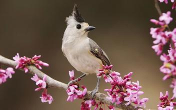

有序列表：默认在子项前面添加序列号
无序列表：默认列表子项前面添加一个小圆点

块级元素
1
2
3
2、在这个世界上，一星陨落，黯淡不了星空灿烂，一花凋零，荒芜不了整个春天。 3、盈盈月光，我掬一杯最清的；落落余辉，我拥一缕最暖的；灼灼红叶，我拾一片最热的；萋萋芳草，我摘一束最灿的；漫漫人生，我要采撷世间最重的——毅力。 4、花半开最美，情留白最浓，懂得给生命留白，亦是一种生活的智慧。淡泊以明志，宁静以致远，懂得给心灵留白，方能在纷杂繁琐的世界，淡看得失，宠辱不惊，去意无留；懂得给感情留白，方能持久生香，留有余地，相互欣赏，拥有默契；懂得给生活留白，揽一份诗意，留一份淡定，多一份睿智，生命方能如诗如画。人心，远近相安，时光，浓淡相宜。有些风景要远观，才能美好；有些人情要淡然，才会久远，人生平淡更持久，留白方能生远，莲养心中，随遇而安，生命的最美不过是懂得的距离。 5、静静的心里，都有一道最美丽的风景。尽管世事繁杂，此心依然，情怀依然；尽管颠簸流离，脚步依然，追求依然；尽管岁月沧桑，世界依然，生命依然。守住最美风景，成为一种风度，宁静而致远；守住最美风景，成为一种境界，悠然而豁达；守住最美风景，成为一种睿智，淡定而从容。带着前世的印记，心怀纯净，身披霞带，踏一水清盈，今生，寻美好而来。 6、即使青春是一株大地伟岸的树，但我明白，一株独秀永远不是挺拔，成行成排的林木，才是遮风挡沙的绿色长城。即使青春是一叶大海孤高的帆，但我明白，一叶孤帆很难远航，千帆竞发才是大海的壮观。 7、爱心是一片照射在冬日的阳光，使贫病交迫的人感到人间的温暖；爱心是一泓出现在沙漠里的泉水，使濒临绝境的人重新看到生活的希望；爱心是一首飘荡在夜空的歌谣，使孤苦无依的人获得心灵的慰藉。 8、爱，有的时候不需要山盟海誓的承诺，但她一定需要细致入微的关怀与问候；爱，有的时候不需要梁祝化蝶的悲壮，但她一定需要心有灵犀的默契与投合；爱，有的时候不需要雄飞雌从的追随，但她一定需要相濡以沫的支持与理解。 9、快乐=物质/欲望。这是美国经济学家萨缪尔森提出的快乐方程式。从经济学的观点看，物质消费越大，欲望越小，快乐就越大，正应了中国人的一句古话“知足常乐”。反之，如果一个人的物质消费有限，而欲望无穷大，将会怎样呢？路瓦栽夫人有那么多“梦想”，又有那么多“陶醉”，她怎么能不痛苦、伤心呢？ 10、生命不是一篇"文摘"，不接受平淡，只收藏精彩。她是一个完整的过程，是一个"连载"，无论成功还是失败，她都不会在你背后留有空白；生命也不是一次彩排，走得不好还可以从头再来，她绝不给你第二次机会，走过去就无法回头。 11、春蚕死去了，但留下了华贵丝绸；蝴蝶死去了，但留下了漂亮的衣裳；画眉飞去了，但留下了美妙的歌声；花朵凋谢了，但留下了缕缕幽香；蜡烛燃尽了，但留下一片光明；雷雨过去了，但留下了七彩霓虹。 12、我们常常为一些事情感到纠结和烦恼，有的烦恼可以化解，有的烦恼是无法从根本上消除，唯一能够转变的就是我们自己的心态，另外就是让时光来冲淡这一切。人生的历程就是一个从不知到知，从否定到肯定，如此不断反复循环。无论怎样，都要给自己微笑，给自己信心。你微笑，世界也会给你笑脸。. 13、站在历史的海岸漫溯那一道道历史沟渠：楚大夫沉吟泽畔，九死不悔；魏武帝扬鞭东指，壮心不已；陶渊明悠然南山，饮酒采菊……他们选择了永恒，纵然谄媚诬蔑视听，也不随其流扬其波，这是执著的选择；纵然马革裹尸，魂归狼烟，只是豪壮的选择；纵然一身清苦，终日难饱，也愿怡然自乐，躬耕陇亩，这是高雅的选择。在一番选择中，帝王将相成其盖世伟业，贤士迁客成其千古文章。 14、心的本色该是如此。成，如朗月照花，深潭微澜，不论顺逆，不论成败的超然，是扬鞭策马，登高临远的驿站；败，仍滴水穿石，汇流入海，有穷且益坚，不坠青云的傲岸，有“将相本无主，男儿当自强”的倔强。荣，江山依旧，风采犹然，恰沧海巫山，熟视岁月如流，浮华万千，不屑过眼烟云；辱，胯下韩信，雪底苍松，宛若羽化之仙，知退一步，海阔天空，不肯因噎废食。 15、守候着自己的世界，或忙或累，或喜或悲，都是一种充实。闲时，静坐一隅，执盏遐思，过去的、现在的、未来的，喜的、悲的...什么都可以去想。或许，美好的东西，本就不该遗忘，怀念也好，思念也罢，用心感受，何尝不是一种幸福？每个人，肩上的背囊，都装满了自己的故事，或伤或痛，不懂卸载，当压的自己，连呼吸都是一种痛的时候，才学会拐弯。有些人，一转身，便走成了背影，有些事，一轮回，便旧成了曾经；学会宽恕自己，原谅错误，想要的，努力去争取；想忘的，时间会帮你。 16、如果说友谊是一颗常青树，那么，浇灌它的必定是出自心田的清泉；如果说友谊是一朵开不败的鲜花，那么，照耀它的必定是从心中升起的太阳。 17、毅力，是千里大堤一沙一石的凝聚，一点点地累积，才有前不见头后不见尾的壮丽；毅力，是春蚕吐丝一缕一缕的环绕，一丝丝地坚持，才有破茧而出重见光明的辉煌；毅力，是远航的船的帆，有了帆，船才可以到达成功的彼岸。 18、当流年的风，或喜或悲，从指尖滑过，转角街头的灯火阑珊，已在光阴的扉页上泛黄，生命的旅程中，没有什么不会在岁月中老去。携一缕暖意，让心没有疏离与荒凉，把那些千回百转的念，凝结成心香，尘封收藏。最好的放下，不是刻意的去忘记，而是让彼此安然。温一盏岁月的暗香，在平静中回味，那些浅浅淡淡的过往，便是岁月留给我们的风景。行一程山水，书一抹眷恋，任走过心间的那缕清韵，在记忆中飞扬。铺一张素笺，将斑驳零散的欢愉，细细描绘，于心之一隅，妥帖安放。寻一处清幽，让那千回百转的念，开成一朵心花，在风中流转。 19、信念是巍巍大厦的栋梁，没有它，就只是一堆散乱的砖瓦；信念是滔滔大江的河床，没有它，就只有一片泛滥的波浪；信念是熊熊烈火的引星，没有它，就只有一把冰冷的柴把；信念是远洋巨轮的主机，没有它，就只剩下瘫痪的巨架。 20、有些人，有些事，遇到了就是一辈子的暖。那种情感，不是你是否拥有了，而是会一直就在记忆里了。那种存在，不是仰望，也和欣赏无关，是一种心与心的碰撞，真切与深切的融合。心里的念，藏于指间，指间里的念，交付于文字，而文字里的繁华只是一时之景，且将这念念生成的景许给流年，唯有愈久愈沉淀的心绪，(www.lz13.cn)才会愈沉淀愈浓郁。就在那和风送暖时，在花开静好时，还会让明眸如水的记忆流经血脉，若一缕暗香浮动。 21、试试看——不是像企鹅那样静静的站在海边，翘首企盼机会的来临，而是如苍鹰一般不停的翻飞盘旋，执著的寻求。 22、请相信，走过流年的山高水长，总有一处风景，会因为我们而美丽；总有一个笑脸，是为我们而绽放；总有一份遇见，唯美了整个曾经；总会有一个人知你冷暖，懂你悲欢；所有相遇的千回百转，为的是来到世上，遇到那个懂你的人；所有的过往，都值得我们珍惜；所有的经历，都是一种懂得，懂得，是生命中最美的缘。 23、斑驳的旧时光里，总有一些或深或浅温暖人心的馨香，让人舍不得遗忘。潮湿的过往，不经意间邂逅了谁的眼眸；文字里泛舟，又与谁的倩影不期而遇？淡淡的墨香中，谁在翩然靠近，袅袅娜娜，直抵心间？一切，都那么美，那么惆怅，这不仅仅是文字的描摹，其外还有收藏着的心思与情感。的确，光阴里曾经明媚或暗淡的过往，总是伴着美丽的忧伤与成长的阵痛；日渐淡薄的往昔，也总能或多或少的在心里留下一丝清雅的执念。收藏，是因为骨子里是个守旧的人；收藏，更是因为心里有值得铭记的感动。今生，心为笔，写下满笺素心浅事，不求浮华，但求安然；今生，心作尘，用绵长的时光，写下一份浅淡，缓缓落墨，轻轻收笔。 24、能够破碎的人，必定真正活过。林黛玉的破碎，在于她有刻骨铭心的爱情；三毛的破碎，源于她历经沧桑后一刹那的明彻与超脱；凡高的破碎，是太阳用黄金的刀子让他在光明中不断剧痛，贝多芬的破碎，则是灵性至极的黑白键撞击生命的悲壮乐章。如果说那些平凡者的破碎泄漏的是人性最纯最美的光点，那么这些优秀的灵魂的破碎则如银色的梨花开满了我们头顶的天空。 25、俄国作家契诃夫说：“有大狗，有小狗，小狗不该因为大狗的存在而心慌意乱。所有的狗都应该叫，就让他各自用上帝给他的声音。 26、多少笑声都是友谊唤起的，多少眼泪都是友谊揩干的。友谊的港湾温情脉脉，友谊的清风灌满征帆。友谊不是感情的投资，它不需要股息和分红。（友谊可以换其他词语） 27、人生要尽全力度过每一关，不管遇到什么困难不可轻言放弃。 28、走过流年悲喜沉浮，历阅尘世沧海桑田，在繁盛与荒凉的交替中，在升华和坠落的更迭中，我们体会过人生中的喜悦和欢愉，也浅尝到流年里的无奈和忧伤，终于懂得，一些经历带来的不仅仅是或深或浅的回忆，也许还有一辈子都刻画在心头的轻痕。很多东西，虽然还是有些放不下，但是我们学会了把它放在心的另一个位置，浅浅抚慰。握一份懂得与感知，盈一怀暖意与淡泊，穿行于浮华俗世，以一袭最温婉的姿态，于淡淡的疼痛中，温暖清寒岁月，轻数时光，向暖流年，许浅冬一季暗香。 29、静，是一种美，一种情怀。水中的月光，静静，倒影了岁月的旖旎；岸边的垂柳，悄悄，婉约了柔美的心情；飘摇的水草，默默，摇曳了风的微笑。旅途中，静静面对风的忧伤，雨的惆怅；思念中，静静面对月的遥远，夜的寂寞；泪光中，静静面对心的呼唤，心的等待。静，是一首婉约的词，一副柔美的画，一卷深情的书。 30、如果说生命是一座庄严的城堡，如果说生命是一株苍茂的大树，如果说生命是一只飞翔的海鸟。那么，信念就是那穹顶的梁柱，就是那深扎的树根，就是那扇动的翅膀。没有信念，生命的动力便荡然无存；没有信念，生命的美丽便杳然西去。（划线处可以换其他词语） 31、试试看——不是面对峰回路转、杂草丛生的前途枉自嗟叹，而是披荆斩棘，举步探索。 32、试试看——不是拘泥于命运的禁锢，听凭命运的摆布，而是奋力敲击其神秘的门扉，使之洞开一个新的天地。微笑着，去唱生活的歌谣。 33、宽容，是一种豁达，是比海洋和天空更为博大的胸襟，是宽广和宽厚的叠加，延续和升华。宽容有度，宽容无价，宽以待人，这是人生处世的基本法责。 34、只有启程，才会到达理想和目的地，只有拼搏，才会获得辉煌的成功，只有播种，才会有收获。只有追求，才会品味堂堂正正的人。 35、《太阳每天都不辞劳苦地升起》巴尔扎克说过“不幸，是天才的进升阶梯，信徒的洗礼之水，弱者的无底深渊”。风雨过后，眼前会是鸥翔鱼游的天水一色；走出荆棘，前面就是铺满鲜花的康庄大道；登上山顶，脚下便是积翠如云的空蒙山色。 36、即使青春是一枝娇艳的花，但我明白，一枝独放永远不是春天，春天该是万紫千红的世界。 37、微笑着，去唱生活的歌谣，不要埋怨生活给予了太多的磨难，不必抱怨生命中有太多的曲折。大海如果失去了巨浪的翻滚，就会失去雄浑；沙漠如果失去了飞沙的狂舞，就会失去壮观。人生如果仅去求得两点一线的一帆风顺，生命也就失去了存在的意义。 38、成熟是一种明亮而不刺眼的光辉，一种圆润而不腻耳的音响，一种不需要对别人察颜观色的从容，一种终于停止了向周围申诉求告的大气，一种不理会哄闹的微笑，一种洗刷了偏激的淡漠，一种无须声张的厚实， 39、宽容，是一种坦荡，可以无私无畏，无拘无束，无尘无染。
2、在这个世界上，一星陨落，黯淡不了星空灿烂，一花凋零，荒芜不了整个春天。 3、盈盈月光，我掬一杯最清的；落落余辉，我拥一缕最暖的；灼灼红叶，我拾一片最热的；萋萋芳草，我摘一束最灿的；漫漫人生，我要采撷世间最重的——毅力。 4、花半开最美，情留白最浓，懂得给生命留白，亦是一种生活的智慧。淡泊以明志，宁静以致远，懂得给心灵留白，方能在纷杂繁琐的世界，淡看得失，宠辱不惊，去意无留；懂得给感情留白，方能持久生香，留有余地，相互欣赏，拥有默契；懂得给生活留白，揽一份诗意，留一份淡定，多一份睿智，生命方能如诗如画。人心，远近相安，时光，浓淡相宜。有些风景要远观，才能美好；有些人情要淡然，才会久远，人生平淡更持久，留白方能生远，莲养心中，随遇而安，生命的最美不过是懂得的距离。 5、静静的心里，都有一道最美丽的风景。尽管世事繁杂，此心依然，情怀依然；尽管颠簸流离，脚步依然，追求依然；尽管岁月沧桑，世界依然，生命依然。守住最美风景，成为一种风度，宁静而致远；守住最美风景，成为一种境界，悠然而豁达；守住最美风景，成为一种睿智，淡定而从容。带着前世的印记，心怀纯净，身披霞带，踏一水清盈，今生，寻美好而来。 6、即使青春是一株大地伟岸的树，但我明白，一株独秀永远不是挺拔，成行成排的林木，才是遮风挡沙的绿色长城。即使青春是一叶大海孤高的帆，但我明白，一叶孤帆很难远航，千帆竞发才是大海的壮观。 7、爱心是一片照射在冬日的阳光，使贫病交迫的人感到人间的温暖；爱心是一泓出现在沙漠里的泉水，使濒临绝境的人重新看到生活的希望；爱心是一首飘荡在夜空的歌谣，使孤苦无依的人获得心灵的慰藉。 8、爱，有的时候不需要山盟海誓的承诺，但她一定需要细致入微的关怀与问候；爱，有的时候不需要梁祝化蝶的悲壮，但她一定需要心有灵犀的默契与投合；爱，有的时候不需要雄飞雌从的追随，但她一定需要相濡以沫的支持与理解。 9、快乐=物质/欲望。这是美国经济学家萨缪尔森提出的快乐方程式。从经济学的观点看，物质消费越大，欲望越小，快乐就越大，正应了中国人的一句古话“知足常乐”。反之，如果一个人的物质消费有限，而欲望无穷大，将会怎样呢？路瓦栽夫人有那么多“梦想”，又有那么多“陶醉”，她怎么能不痛苦、伤心呢？ 10、生命不是一篇"文摘"，不接受平淡，只收藏精彩。她是一个完整的过程，是一个"连载"，无论成功还是失败，她都不会在你背后留有空白；生命也不是一次彩排，走得不好还可以从头再来，她绝不给你第二次机会，走过去就无法回头。 11、春蚕死去了，但留下了华贵丝绸；蝴蝶死去了，但留下了漂亮的衣裳；画眉飞去了，但留下了美妙的歌声；花朵凋谢了，但留下了缕缕幽香；蜡烛燃尽了，但留下一片光明；雷雨过去了，但留下了七彩霓虹。 12、我们常常为一些事情感到纠结和烦恼，有的烦恼可以化解，有的烦恼是无法从根本上消除，唯一能够转变的就是我们自己的心态，另外就是让时光来冲淡这一切。人生的历程就是一个从不知到知，从否定到肯定，如此不断反复循环。无论怎样，都要给自己微笑，给自己信心。你微笑，世界也会给你笑脸。. 13、站在历史的海岸漫溯那一道道历史沟渠：楚大夫沉吟泽畔，九死不悔；魏武帝扬鞭东指，壮心不已；陶渊明悠然南山，饮酒采菊……他们选择了永恒，纵然谄媚诬蔑视听，也不随其流扬其波，这是执著的选择；纵然马革裹尸，魂归狼烟，只是豪壮的选择；纵然一身清苦，终日难饱，也愿怡然自乐，躬耕陇亩，这是高雅的选择。在一番选择中，帝王将相成其盖世伟业，贤士迁客成其千古文章。 14、心的本色该是如此。成，如朗月照花，深潭微澜，不论顺逆，不论成败的超然，是扬鞭策马，登高临远的驿站；败，仍滴水穿石，汇流入海，有穷且益坚，不坠青云的傲岸，有“将相本无主，男儿当自强”的倔强。荣，江山依旧，风采犹然，恰沧海巫山，熟视岁月如流，浮华万千，不屑过眼烟云；辱，胯下韩信，雪底苍松，宛若羽化之仙，知退一步，海阔天空，不肯因噎废食。 15、守候着自己的世界，或忙或累，或喜或悲，都是一种充实。闲时，静坐一隅，执盏遐思，过去的、现在的、未来的，喜的、悲的...什么都可以去想。或许，美好的东西，本就不该遗忘，怀念也好，思念也罢，用心感受，何尝不是一种幸福？每个人，肩上的背囊，都装满了自己的故事，或伤或痛，不懂卸载，当压的自己，连呼吸都是一种痛的时候，才学会拐弯。有些人，一转身，便走成了背影，有些事，一轮回，便旧成了曾经；学会宽恕自己，原谅错误，想要的，努力去争取；想忘的，时间会帮你。 16、如果说友谊是一颗常青树，那么，浇灌它的必定是出自心田的清泉；如果说友谊是一朵开不败的鲜花，那么，照耀它的必定是从心中升起的太阳。 17、毅力，是千里大堤一沙一石的凝聚，一点点地累积，才有前不见头后不见尾的壮丽；毅力，是春蚕吐丝一缕一缕的环绕，一丝丝地坚持，才有破茧而出重见光明的辉煌；毅力，是远航的船的帆，有了帆，船才可以到达成功的彼岸。 18、当流年的风，或喜或悲，从指尖滑过，转角街头的灯火阑珊，已在光阴的扉页上泛黄，生命的旅程中，没有什么不会在岁月中老去。携一缕暖意，让心没有疏离与荒凉，把那些千回百转的念，凝结成心香，尘封收藏。最好的放下，不是刻意的去忘记，而是让彼此安然。温一盏岁月的暗香，在平静中回味，那些浅浅淡淡的过往，便是岁月留给我们的风景。行一程山水，书一抹眷恋，任走过心间的那缕清韵，在记忆中飞扬。铺一张素笺，将斑驳零散的欢愉，细细描绘，于心之一隅，妥帖安放。寻一处清幽，让那千回百转的念，开成一朵心花，在风中流转。 19、信念是巍巍大厦的栋梁，没有它，就只是一堆散乱的砖瓦；信念是滔滔大江的河床，没有它，就只有一片泛滥的波浪；信念是熊熊烈火的引星，没有它，就只有一把冰冷的柴把；信念是远洋巨轮的主机，没有它，就只剩下瘫痪的巨架。 20、有些人，有些事，遇到了就是一辈子的暖。那种情感，不是你是否拥有了，而是会一直就在记忆里了。那种存在，不是仰望，也和欣赏无关，是一种心与心的碰撞，真切与深切的融合。心里的念，藏于指间，指间里的念，交付于文字，而文字里的繁华只是一时之景，且将这念念生成的景许给流年，唯有愈久愈沉淀的心绪，(www.lz13.cn)才会愈沉淀愈浓郁。就在那和风送暖时，在花开静好时，还会让明眸如水的记忆流经血脉，若一缕暗香浮动。 21、试试看——不是像企鹅那样静静的站在海边，翘首企盼机会的来临，而是如苍鹰一般不停的翻飞盘旋，执著的寻求。 22、请相信，走过流年的山高水长，总有一处风景，会因为我们而美丽；总有一个笑脸，是为我们而绽放；总有一份遇见，唯美了整个曾经；总会有一个人知你冷暖，懂你悲欢；所有相遇的千回百转，为的是来到世上，遇到那个懂你的人；所有的过往，都值得我们珍惜；所有的经历，都是一种懂得，懂得，是生命中最美的缘。 23、斑驳的旧时光里，总有一些或深或浅温暖人心的馨香，让人舍不得遗忘。潮湿的过往，不经意间邂逅了谁的眼眸；文字里泛舟，又与谁的倩影不期而遇？淡淡的墨香中，谁在翩然靠近，袅袅娜娜，直抵心间？一切，都那么美，那么惆怅，这不仅仅是文字的描摹，其外还有收藏着的心思与情感。的确，光阴里曾经明媚或暗淡的过往，总是伴着美丽的忧伤与成长的阵痛；日渐淡薄的往昔，也总能或多或少的在心里留下一丝清雅的执念。收藏，是因为骨子里是个守旧的人；收藏，更是因为心里有值得铭记的感动。今生，心为笔，写下满笺素心浅事，不求浮华，但求安然；今生，心作尘，用绵长的时光，写下一份浅淡，缓缓落墨，轻轻收笔。 24、能够破碎的人，必定真正活过。林黛玉的破碎，在于她有刻骨铭心的爱情；三毛的破碎，源于她历经沧桑后一刹那的明彻与超脱；凡高的破碎，是太阳用黄金的刀子让他在光明中不断剧痛，贝多芬的破碎，则是灵性至极的黑白键撞击生命的悲壮乐章。如果说那些平凡者的破碎泄漏的是人性最纯最美的光点，那么这些优秀的灵魂的破碎则如银色的梨花开满了我们头顶的天空。 25、俄国作家契诃夫说：“有大狗，有小狗，小狗不该因为大狗的存在而心慌意乱。所有的狗都应该叫，就让他各自用上帝给他的声音。 26、多少笑声都是友谊唤起的，多少眼泪都是友谊揩干的。友谊的港湾温情脉脉，友谊的清风灌满征帆。友谊不是感情的投资，它不需要股息和分红。（友谊可以换其他词语） 27、人生要尽全力度过每一关，不管遇到什么困难不可轻言放弃。 28、走过流年悲喜沉浮，历阅尘世沧海桑田，在繁盛与荒凉的交替中，在升华和坠落的更迭中，我们体会过人生中的喜悦和欢愉，也浅尝到流年里的无奈和忧伤，终于懂得，一些经历带来的不仅仅是或深或浅的回忆，也许还有一辈子都刻画在心头的轻痕。很多东西，虽然还是有些放不下，但是我们学会了把它放在心的另一个位置，浅浅抚慰。握一份懂得与感知，盈一怀暖意与淡泊，穿行于浮华俗世，以一袭最温婉的姿态，于淡淡的疼痛中，温暖清寒岁月，轻数时光，向暖流年，许浅冬一季暗香。 29、静，是一种美，一种情怀。水中的月光，静静，倒影了岁月的旖旎；岸边的垂柳，悄悄，婉约了柔美的心情；飘摇的水草，默默，摇曳了风的微笑。旅途中，静静面对风的忧伤，雨的惆怅；思念中，静静面对月的遥远，夜的寂寞；泪光中，静静面对心的呼唤，心的等待。静，是一首婉约的词，一副柔美的画，一卷深情的书。 30、如果说生命是一座庄严的城堡，如果说生命是一株苍茂的大树，如果说生命是一只飞翔的海鸟。那么，信念就是那穹顶的梁柱，就是那深扎的树根，就是那扇动的翅膀。没有信念，生命的动力便荡然无存；没有信念，生命的美丽便杳然西去。（划线处可以换其他词语） 31、试试看——不是面对峰回路转、杂草丛生的前途枉自嗟叹，而是披荆斩棘，举步探索。 32、试试看——不是拘泥于命运的禁锢，听凭命运的摆布，而是奋力敲击其神秘的门扉，使之洞开一个新的天地。微笑着，去唱生活的歌谣。 33、宽容，是一种豁达，是比海洋和天空更为博大的胸襟，是宽广和宽厚的叠加，延续和升华。宽容有度，宽容无价，宽以待人，这是人生处世的基本法责。 34、只有启程，才会到达理想和目的地，只有拼搏，才会获得辉煌的成功，只有播种，才会有收获。只有追求，才会品味堂堂正正的人。 35、《太阳每天都不辞劳苦地升起》巴尔扎克说过“不幸，是天才的进升阶梯，信徒的洗礼之水，弱者的无底深渊”。风雨过后，眼前会是鸥翔鱼游的天水一色；走出荆棘，前面就是铺满鲜花的康庄大道；登上山顶，脚下便是积翠如云的空蒙山色。 36、即使青春是一枝娇艳的花，但我明白，一枝独放永远不是春天，春天该是万紫千红的世界。 37、微笑着，去唱生活的歌谣，不要埋怨生活给予了太多的磨难，不必抱怨生命中有太多的曲折。大海如果失去了巨浪的翻滚，就会失去雄浑；沙漠如果失去了飞沙的狂舞，就会失去壮观。人生如果仅去求得两点一线的一帆风顺，生命也就失去了存在的意义。 38、成熟是一种明亮而不刺眼的光辉，一种圆润而不腻耳的音响，一种不需要对别人察颜观色的从容，一种终于停止了向周围申诉求告的大气，一种不理会哄闹的微笑，一种洗刷了偏激的淡漠，一种无须声张的厚实， 39、宽容，是一种坦荡，可以无私无畏，无拘无束，无尘无染。 5、静静的心里，都有一道最美丽的风景。尽管世事繁杂，此心依然，情怀依然；尽管颠簸流离，脚步依然，追求依然；尽管岁月沧桑，世界依然，生命依然。守住最美风景，成为一种风度，宁静而致远；守住最美风景，成为一种境界，悠然而豁达；守住最美风景，成为一种睿智，淡定而从容。带着前世的印记，心怀纯净，身披霞带，踏一水清盈，今生，寻美好而来。 6、即使青春是一株大地伟岸的树，但我明白，一株独秀永远不是挺拔，成行成排的林木，才是遮风挡沙的绿色长城。即使青春是一叶大海孤高的帆，但我明白，一叶孤帆很难远航，千帆竞发才是大海的壮观。 7、爱心是一片照射在冬日的阳光，使贫病交迫的人感到人间的温暖；爱心是一泓出现在沙漠里的泉水，使濒临绝境的人重新看到生活的希望；爱心是一首飘荡在夜空的歌谣，使孤苦无依的人获得心灵的慰藉。
2、在这个世界上，一星陨落，黯淡不了星空灿烂，一花凋零，荒芜不了整个春天。 3、盈盈月光，我掬一杯最清的；落落余辉，我拥一缕最暖的；灼灼红叶，我拾一片最热的；萋萋芳草，我摘一束最灿的；漫漫人生，我要采撷世间最重的——毅力。 4、花半开最美，情留白最浓，懂得给生命留白，亦是一种生活的智慧。淡泊以明志，宁静以致远，懂得给心灵留白，方能在纷杂繁琐的世界，淡看得失，宠辱不惊，去意无留；懂得给感情留白，方能持久生香，留有余地，相互欣赏，拥有默契；懂得给生活留白，揽一份诗意，留一份淡定，多一份睿智，生命方能如诗如画。人心，远近相安，时光，浓淡相宜。有些风景要远观，才能美好；有些人情要淡然，才会久远，人生平淡更持久，留白方能生远，莲养心中，随遇而安，生命的最美不过是懂得的距离。 5、静静的心里，都有一道最美丽的风景。尽管世事繁杂，此心依然，情怀依然；尽管颠簸流离，脚步依然，追求依然；尽管岁月沧桑，世界依然，生命依然。守住最美风景，成为一种风度，宁静而致远；守住最美风景，成为一种境界，悠然而豁达；守住最美风景，成为一种睿智，淡定而从容。带着前世的印记，心怀纯净，身披霞带，踏一水清盈，今生，寻美好而来。 6、即使青春是一株大地伟岸的树，但我明白，一株独秀永远不是挺拔，成行成排的林木，才是遮风挡沙的绿色长城。即使青春是一叶大海孤高的帆，但我明白，一叶孤帆很难远航，千帆竞发才是大海的壮观。 7、爱心是一片照射在冬日的阳光，使贫病交迫的人感到人间的温暖；爱心是一泓出现在沙漠里的泉水，使濒临绝境的人重新看到生活的希望；爱心是一首飘荡在夜空的歌谣，使孤苦无依的人获得心灵的慰藉。 8、爱，有的时候不需要山盟海誓的承诺，但她一定需要细致入微的关怀与问候；爱，有的时候不需要梁祝化蝶的悲壮，但她一定需要心有灵犀的默契与投合；爱，有的时候不需要雄飞雌从的追随，但她一定需要相濡以沫的支持与理解。 9、快乐=物质/欲望。这是美国经济学家萨缪尔森提出的快乐方程式。从经济学的观点看，物质消费越大，欲望越小，快乐就越大，正应了中国人的一句古话“知足常乐”。反之，如果一个人的物质消费有限，而欲望无穷大，将会怎样呢？路瓦栽夫人有那么多“梦想”，又有那么多“陶醉”，她怎么能不痛苦、伤心呢？ 10、生命不是一篇"文摘"，不接受平淡，只收藏精彩。她是一个完整的过程，是一个"连载"，无论成功还是失败，她都不会在你背后留有空白；生命也不是一次彩排，走得不好还可以从头再来，她绝不给你第二次机会，走过去就无法回头。 11、春蚕死去了，但留下了华贵丝绸；蝴蝶死去了，但留下了漂亮的衣裳；画眉飞去了，但留下了美妙的歌声；花朵凋谢了，但留下了缕缕幽香；蜡烛燃尽了，但留下一片光明；雷雨过去了，但留下了七彩霓虹。 12、我们常常为一些事情感到纠结和烦恼，有的烦恼可以化解，有的烦恼是无法从根本上消除，唯一能够转变的就是我们自己的心态，另外就是让时光来冲淡这一切。人生的历程就是一个从不知到知，从否定到肯定，如此不断反复循环。无论怎样，都要给自己微笑，给自己信心。你微笑，世界也会给你笑脸。. 13、站在历史的海岸漫溯那一道道历史沟渠：楚大夫沉吟泽畔，九死不悔；魏武帝扬鞭东指，壮心不已；陶渊明悠然南山，饮酒采菊……他们选择了永恒，纵然谄媚诬蔑视听，也不随其流扬其波，这是执著的选择；纵然马革裹尸，魂归狼烟，只是豪壮的选择；纵然一身清苦，终日难饱，也愿怡然自乐，躬耕陇亩，这是高雅的选择。在一番选择中，帝王将相成其盖世伟业，贤士迁客成其千古文章。 14、心的本色该是如此。成，如朗月照花，深潭微澜，不论顺逆，不论成败的超然，是扬鞭策马，登高临远的驿站；败，仍滴水穿石，汇流入海，有穷且益坚，不坠青云的傲岸，有“将相本无主，男儿当自强”的倔强。荣，江山依旧，风采犹然，恰沧海巫山，熟视岁月如流，浮华万千，不屑过眼烟云；辱，胯下韩信，雪底苍松，宛若羽化之仙，知退一步，海阔天空，不肯因噎废食。 15、守候着自己的世界，或忙或累，或喜或悲，都是一种充实。闲时，静坐一隅，执盏遐思，过去的、现在的、未来的，喜的、悲的...什么都可以去想。或许，美好的东西，本就不该遗忘，怀念也好，思念也罢，用心感受，何尝不是一种幸福？每个人，肩上的背囊，都装满了自己的故事，或伤或痛，不懂卸载，当压的自己，连呼吸都是一种痛的时候，才学会拐弯。有些人，一转身，便走成了背影，有些事，一轮回，便旧成了曾经；学会宽恕自己，原谅错误，想要的，努力去争取；想忘的，时间会帮你。 16、如果说友谊是一颗常青树，那么，浇灌它的必定是出自心田的清泉；如果说友谊是一朵开不败的鲜花，那么，照耀它的必定是从心中升起的太阳。 17、毅力，是千里大堤一沙一石的凝聚，一点点地累积，才有前不见头后不见尾的壮丽；毅力，是春蚕吐丝一缕一缕的环绕，一丝丝地坚持，才有破茧而出重见光明的辉煌；毅力，是远航的船的帆，有了帆，船才可以到达成功的彼岸。 18、当流年的风，或喜或悲，从指尖滑过，转角街头的灯火阑珊，已在光阴的扉页上泛黄，生命的旅程中，没有什么不会在岁月中老去。携一缕暖意，让心没有疏离与荒凉，把那些千回百转的念，凝结成心香，尘封收藏。最好的放下，不是刻意的去忘记，而是让彼此安然。温一盏岁月的暗香，在平静中回味，那些浅浅淡淡的过往，便是岁月留给我们的风景。行一程山水，书一抹眷恋，任走过心间的那缕清韵，在记忆中飞扬。铺一张素笺，将斑驳零散的欢愉，细细描绘，于心之一隅，妥帖安放。寻一处清幽，让那千回百转的念，开成一朵心花，在风中流转。 19、信念是巍巍大厦的栋梁，没有它，就只是一堆散乱的砖瓦；信念是滔滔大江的河床，没有它，就只有一片泛滥的波浪；信念是熊熊烈火的引星，没有它，就只有一把冰冷的柴把；信念是远洋巨轮的主机，没有它，就只剩下瘫痪的巨架。 20、有些人，有些事，遇到了就是一辈子的暖。那种情感，不是你是否拥有了，而是会一直就在记忆里了。那种存在，不是仰望，也和欣赏无关，是一种心与心的碰撞，真切与深切的融合。心里的念，藏于指间，指间里的念，交付于文字，而文字里的繁华只是一时之景，且将这念念生成的景许给流年，唯有愈久愈沉淀的心绪，(www.lz13.cn)才会愈沉淀愈浓郁。就在那和风送暖时，在花开静好时，还会让明眸如水的记忆流经血脉，若一缕暗香浮动。 21、试试看——不是像企鹅那样静静的站在海边，翘首企盼机会的来临，而是如苍鹰一般不停的翻飞盘旋，执著的寻求。 22、请相信，走过流年的山高水长，总有一处风景，会因为我们而美丽；总有一个笑脸，是为我们而绽放；总有一份遇见，唯美了整个曾经；总会有一个人知你冷暖，懂你悲欢；所有相遇的千回百转，为的是来到世上，遇到那个懂你的人；所有的过往，都值得我们珍惜；所有的经历，都是一种懂得，懂得，是生命中最美的缘。 23、斑驳的旧时光里，总有一些或深或浅温暖人心的馨香，让人舍不得遗忘。潮湿的过往，不经意间邂逅了谁的眼眸；文字里泛舟，又与谁的倩影不期而遇？淡淡的墨香中，谁在翩然靠近，袅袅娜娜，直抵心间？一切，都那么美，那么惆怅，这不仅仅是文字的描摹，其外还有收藏着的心思与情感。的确，光阴里曾经明媚或暗淡的过往，总是伴着美丽的忧伤与成长的阵痛；日渐淡薄的往昔，也总能或多或少的在心里留下一丝清雅的执念。收藏，是因为骨子里是个守旧的人；收藏，更是因为心里有值得铭记的感动。今生，心为笔，写下满笺素心浅事，不求浮华，但求安然；今生，心作尘，用绵长的时光，写下一份浅淡，缓缓落墨，轻轻收笔。 24、能够破碎的人，必定真正活过。林黛玉的破碎，在于她有刻骨铭心的爱情；三毛的破碎，源于她历经沧桑后一刹那的明彻与超脱；凡高的破碎，是太阳用黄金的刀子让他在光明中不断剧痛，贝多芬的破碎，则是灵性至极的黑白键撞击生命的悲壮乐章。如果说那些平凡者的破碎泄漏的是人性最纯最美的光点，那么这些优秀的灵魂的破碎则如银色的梨花开满了我们头顶的天空。 25、俄国作家契诃夫说：“有大狗，有小狗，小狗不该因为大狗的存在而心慌意乱。所有的狗都应该叫，就让他各自用上帝给他的声音。 26、多少笑声都是友谊唤起的，多少眼泪都是友谊揩干的。友谊的港湾温情脉脉，友谊的清风灌满征帆。友谊不是感情的投资，它不需要股息和分红。（友谊可以换其他词语） 27、人生要尽全力度过每一关，不管遇到什么困难不可轻言放弃。 28、走过流年悲喜沉浮，历阅尘世沧海桑田，在繁盛与荒凉的交替中，在升华和坠落的更迭中，我们体会过人生中的喜悦和欢愉，也浅尝到流年里的无奈和忧伤，终于懂得，一些经历带来的不仅仅是或深或浅的回忆，也许还有一辈子都刻画在心头的轻痕。很多东西，虽然还是有些放不下，但是我们学会了把它放在心的另一个位置，浅浅抚慰。握一份懂得与感知，盈一怀暖意与淡泊，穿行于浮华俗世，以一袭最温婉的姿态，于淡淡的疼痛中，温暖清寒岁月，轻数时光，向暖流年，许浅冬一季暗香。 29、静，是一种美，一种情怀。水中的月光，静静，倒影了岁月的旖旎；岸边的垂柳，悄悄，婉约了柔美的心情；飘摇的水草，默默，摇曳了风的微笑。旅途中，静静面对风的忧伤，雨的惆怅；思念中，静静面对月的遥远，夜的寂寞；泪光中，静静面对心的呼唤，心的等待。静，是一首婉约的词，一副柔美的画，一卷深情的书。 30、如果说生命是一座庄严的城堡，如果说生命是一株苍茂的大树，如果说生命是一只飞翔的海鸟。那么，信念就是那穹顶的梁柱，就是那深扎的树根，就是那扇动的翅膀。没有信念，生命的动力便荡然无存；没有信念，生命的美丽便杳然西去。（划线处可以换其他词语） 31、试试看——不是面对峰回路转、杂草丛生的前途枉自嗟叹，而是披荆斩棘，举步探索。 32、试试看——不是拘泥于命运的禁锢，听凭命运的摆布，而是奋力敲击其神秘的门扉，使之洞开一个新的天地。微笑着，去唱生活的歌谣。 33、宽容，是一种豁达，是比海洋和天空更为博大的胸襟，是宽广和宽厚的叠加，延续和升华。宽容有度，宽容无价，宽以待人，这是人生处世的基本法责。 34、只有启程，才会到达理想和目的地，只有拼搏，才会获得辉煌的成功，只有播种，才会有收获。只有追求，才会品味堂堂正正的人。 35、《太阳每天都不辞劳苦地升起》巴尔扎克说过“不幸，是天才的进升阶梯，信徒的洗礼之水，弱者的无底深渊”。风雨过后，眼前会是鸥翔鱼游的天水一色；走出荆棘，前面就是铺满鲜花的康庄大道；登上山顶，脚下便是积翠如云的空蒙山色。 36、即使青春是一枝娇艳的花，但我明白，一枝独放永远不是春天，春天该是万紫千红的世界。 37、微笑着，去唱生活的歌谣，不要埋怨生活给予了太多的磨难，不必抱怨生命中有太多的曲折。大海如果失去了巨浪的翻滚，就会失去雄浑；沙漠如果失去了飞沙的狂舞，就会失去壮观。人生如果仅去求得两点一线的一帆风顺，生命也就失去了存在的意义。 38、成熟是一种明亮而不刺眼的光辉，一种圆润而不腻耳的音响，一种不需要对别人察颜观色的从容，一种终于停止了向周围申诉求告的大气，一种不理会哄闹的微笑，一种洗刷了偏激的淡漠，一种无须声张的厚实， 39、宽容，是一种坦荡，可以无私无畏，无拘无束，无尘无染。 8、爱，有的时候不需要山盟海誓的承诺，但她一定需要细致入微的关怀与问候；爱，有的时候不需要梁祝化蝶的悲壮，但她一定需要心有灵犀的默契与投合；爱，有的时候不需要雄飞雌从的追随，但她一定需要相濡以沫的支持与理解。 9、快乐=物质/欲望。这是美国经济学家萨缪尔森提出的快乐方程式。从经济学的观点看，物质消费越大，欲望越小，快乐就越大，正应了中国人的一句古话“知足常乐”。反之，如果一个人的物质消费有限，而欲望无穷大，将会怎样呢？路瓦栽夫人有那么多“梦想”，又有那么多“陶醉”，她怎么能不痛苦、伤心呢？ 10、生命不是一篇"文摘"，不接受平淡，只收藏精彩。她是一个完整的过程，是一个"连载"，无论成功还是失败，她都不会在你背后留有空白；生命也不是一次彩排，走得不好还可以从头再来，她绝不给你第二次机会，走过去就无法回头。 11、春蚕死去了，但留下了华贵丝绸；蝴蝶死去了，但留下了漂亮的衣裳；画眉飞去了，但留下了美妙的歌声；花朵凋谢了，但留下了缕缕幽香；蜡烛燃尽了，但留下一片光明；雷雨过去了，但留下了七彩霓虹。 12、我们常常为一些事情感到纠结和烦恼，有的烦恼可以化解，有的烦恼是无法从根本上消除，唯一能够转变的就是我们自己的心态，另外就是让时光来冲淡这一切。人生的历程就是一个从不知到知，从否定到肯定，如此不断反复循环。无论怎样，都要给自己微笑，给自己信心。你微笑，世界也会给你笑脸。. 13、站在历史的海岸漫溯那一道道历史沟渠：楚大夫沉吟泽畔，九死不悔；魏武帝扬鞭东指，壮心不已；陶渊明悠然南山，饮酒采菊……他们选择了永恒，纵然谄媚诬蔑视听，也不随其流扬其波，这是执著的选择；纵然马革裹尸，魂归狼烟，只是豪壮的选择；纵然一身清苦，终日难饱，也愿怡然自乐，躬耕陇亩，这是高雅的选择。在一番选择中，帝王将相成其盖世伟业，贤士迁客成其千古文章。